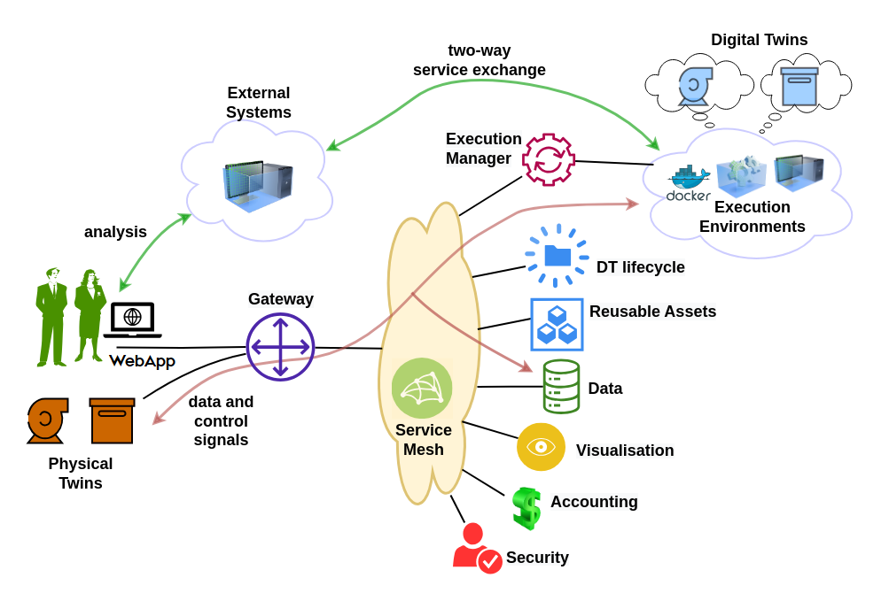
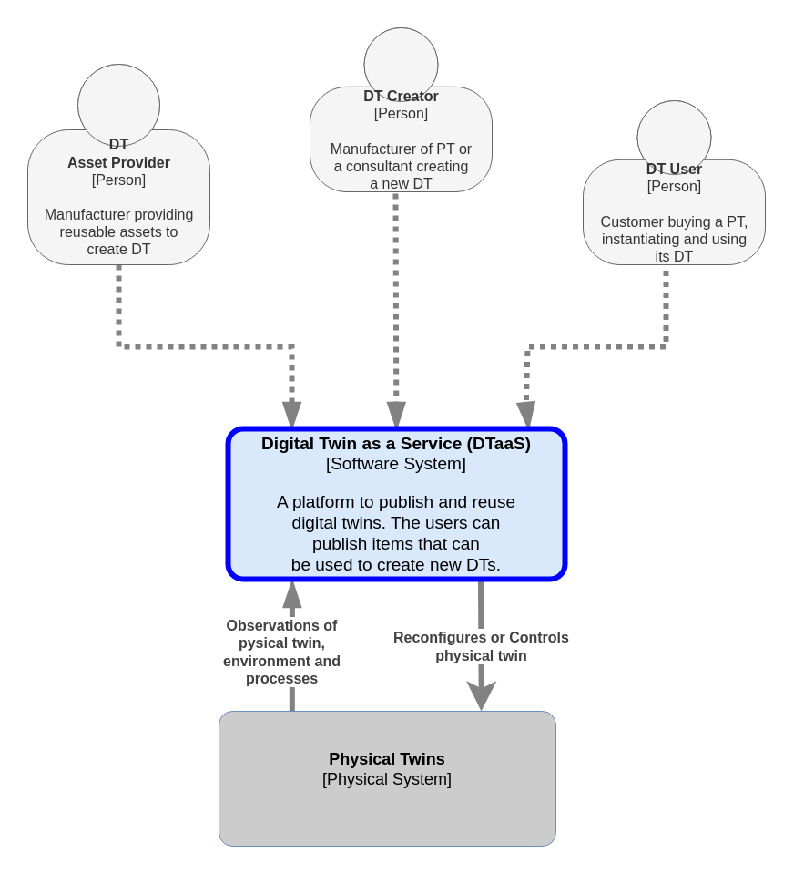
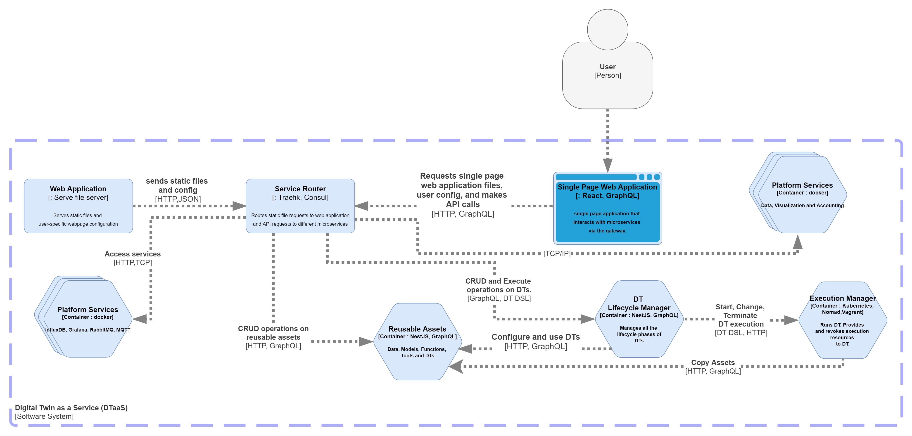

System Overview
System Overview
User Requirements
The DTaaS software platform users expect a single platform to support the complete DT lifecycle. To be more precise, the platform users expect the following features:
- Author – create different assets of the DT on the platform itself. This step requires use of some software frameworks and tools whose sole purpose is to author DT assets.
- Consolidate – consolidate the list of available DT assets and authoring tools so that user can navigate the library of reusable assets. This functionality requires support for discovery of available assets.
- Configure – support selection and configuration of DTs. This functionality also requires support for validation of a given configuration.
- Execute – provision computing infrastructure on demand to support execution of a DT.
- Explore – interact with a DT and explore the results stored both inside and outside the platform. Exploration may lead to analytical insights.
- Save – save the state of a DT that’s already in the execution phase. This functionality is required for on demand saving and re-spawning of DTs.
- What-if analysis – explore alternative scenarios to (i) plan for an optimal next step, (ii) recalibrate new DT assets, (iii) automated creation of new DTs or their assets; these newly created DT assets may be used to perform scientifically valid experiments.
- Share – share a DT with other users of their organisation.
System Architecture
The figure shows the system architecture of the the DTaaS software platform.

System Components
The users interact with the software platform using a website. The gateway is a single point of entry for direct access to the platform services. The gateway is responsible for controlling user access to the microservice components. The service mesh enables discovery of microservices, load balancing and authentication functionalities.
In addition, there are microservices for catering to author, store, explore, configure, execute and scenario analysis requirements. The microservices are complementary and composable; they fulfil core requirements of the system.
The microservices responsible for satisfying the user requirements are:
- The security microservice implements role-based access control (RBAC) in the platform.
-
The accounting microservice is responsible for keeping track of the platform, DT asset and infrastructure usage. Any licensing, usage restrictions need to be enforced by the accounting microservice. Accounting is a pre-requisite to commercialisation of the platform. Due to significant use of external infrastructure and resources via the platform, the accounting microservice needs to interface with accounting systems of the external services.
-
The data microservice is a frontend to all the databases integrated into the platform. A time-series database and a graph database are essential. These two databases store timeseries data from PT, events on PT/DT, commands sent by DT to PT. The PTs uses these databases even when their respective DTs are not in the execute phase.
- The visualisation microservice is again a frontend to visualisation software that are natively supported inside the platform. Any visualisation software running either on external systems or on client browsers do not need to interact with this microservice. They can directly use the data provided by the data microservice.
C4 Architectural Diagrams
The C4 architectural diagrams of the DTaaS software are presented here.
Level 1
This Level 1 diagram only shows the users and the roles they play in the DTaaS software.

Level 2
This simplified version of Level 2 diagram shows the software containers of the DTaaS software.

If you are interested, please take a look at the detailed diagram.
{kind=link}
Please note that the given diagram only covers DT Lifecycle, Reusable Assets and Execution Manager.
Mapping
A mapping of the C4 level 2 containers to components identified in the system architecture is also available in the table.
| System Component | Container(s) |
|---|---|
| Gateway | Traefik Gateway |
| Unified Interface | React Webapplication |
| Reusable Assets | Library Microservice |
| Data | MQTT, InfluxDB, and RabbitMQ (not shown in the C4 Level 2 diagram) |
| Visualization | InfluxDB (not shown in the C4 Level 2 diagram) |
| DT Lifecycle | DT Lifecycle Manager and DT Configuration Validator |
| Security | Gitlab OAuth |
| Accounting | None |
| Execution Manager | Execution Manager |